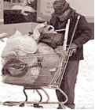
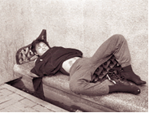
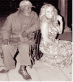

Một cô gái trẻ trong bộ đồ veste nâu sang trọng đi trên đường Larkin của thành phố San Francisco. Cô bị một người đàn ông đứng tuổi ăn mặc dơ dáy chặn lại xin tiền. Bên cạnh, vợ ông ta đang cuộn tròn ngủ thiếp trong tấm bìa các tông (carton). Bệnh cơ thể - Đời sống khó khăn - Là những nguyên nhân đưa đến hiện tượng người vô gia cư.
Thật là đáng ngạc nhiên, hiện tượng người Mỹ và các sắc dân thiểu số ngủ ngoài vỉa hè, trong parking lot hoặc trên công viên… trong các thành phố lớn ở Hoa Kỳ vẫn còn tồn tại cùng với "chiến dịch trong sạch hoá thành phố "và nhằm giải quyết "bớt" đi những tệ nạn xã hội của chính quyền Mỹ. Nhưng việc làm của họ xem ra không đem lại kết quả như mong muốn. Sự phình to của "giới không nhà" ở Mỹ ngày càng tăng nhanh khiến chính phủ nước này phải báo động và kêu gọi những cơ quan thiện nguyện của tư nhân hay tôn giáo tham gia giúp họ.
Gần nửa thập niên sự ì ạch của nền kinh tế Hoa Kỳ đã dẫn đến việc phá sản hàng loạt doanh nghiệp, tỷ lệ thất nghiệp lên đến con số kỷ lục từ trước đến nay, thu nhập đầu người rung rinh chao đảo. Tác động của chúng đối với giới lao động đã đến mức nghiêm trọng.
Thời gian gần đây Hoa Kỳ chứng kiến sự bùng nổ số người không nhà (homeless) tăng 2% trong một năm (theo số liệu điều tra của cơ quan An Sinh Xã Hội chính phủ Liên Bang). Nhưng nhiều nhà hoạt động xã hội vì người nghèo tin rằng con số này chắc chắn nhiều gấp đôi mức công bố.
Sự xuất hiện đông đảo của giới không nhà trên các ngỏ ngách của những thành phố ở Mỹ vì chính phủ không có đủ nhà cung cấp cho người nghèo khó. Nguyên nhân sự gia tăng số lượng không chỉ riêng về tình trạng "mất việc làm" mà còn bao gồm những người bệnh tâm thần, bệnh về cơ thể…. Theo Trung tâm luật pháp quốc gia Hoa Kỳ nghiên cứu về người vô gia cư và nghèo túng thì có hơn 3 triệu đàn ông, đàn bà và trẻ em không nhà cửa trong những năm qua. Khoảng 30% trong số họ thì "kinh niên", số khác thì "tạm thời". Và con số cao hay thấp không nhất định được bởi tuỳ vào đột biến của xã hội.
Bên cạnh 3 triệu người vô gia cư "chuyên nghiệp" mà chính phủ Hoa Kỳ phải có trách nhiệm, còn có khoảng 5 triệu người nghèo cũng cần sự giúp đỡ của hành pháp Hoa Kỳ về mọi mặt như nhà ở, sức khỏe v.v.
Theo báo cáo của "Chương trình giúp đỡ người vô gia cư" thì những người vô gia cư cần việc làm, cần giúp nhà ở và tiền thuê nhà. Cũng theo chương trình này thì phần lớn người vô gia cư thường xuyên nhận quần áo, phương tiện di chuyển và lợi ích công cộng. Một số lớn người vô gia cư đã nhận nhà ở. Một nhân viên của Chương Trình cho biết rằng: dù chính phủ có tạo điều kiện để cho họ được làm việc, nhưng "vốn ở không rồi quen" nên họ không thích làm việc và số lượng người như vậy không phải là ít.
1) "Mặc dù là nước giàu nhất thế giới, nhưng không thể giải quyết hết tệ nạn ngủ đường"
Một nhà hoạt động xã hội học nói như thế trong một buổi thảo luận về "hiện tượng người không nhà" càng gia tăng trên các thành phố vùng Đông vịnh. Ông không mấy hy vọng vào các đạo luật của chính quyền địa phương. Lý do thì nhiều, chẳng hạn, luật tạo điều kiện cho việc xua đuổi người không nhà ra khỏi những nơi công cộng. Nhưng ít thấy có một luật nào đề cập vấn đề của người vô gia cư.
Bên cạnh sự cảm thông đối với những người nghèo khổ không nhà, cũng có người vẫn còn có thái độ ác cảm, thậm chí bạo lực đối với họ. Nhiều người sống trên vỉa hè nói: nỗi ám ảnh nhất đối với họ là sợ bị tấn công. Điều này đang được giới truyền thông đề cập. Một tờ báo trong vùng đã tường thuật lại, cảnh một người vô gia cư bị cảnh sát còng tay và quăng lên xe chỉ vì ngủ trong parking lot của một khách sạn.
Ông Richard là người vô gia cư Mỹ gốc Phi Châu "thành viên thường trực" của góc đường Larkin và Geary thuộc thành phố SF kể cho nhà báo Kiến Nâu của Đời Mới Weekly Magazine về việc ông bị đám người "vô gia cư da trắng" tấn công.
Vào một ngày cuối Xuân năm 2003, khí hậu vùng Vịnh thay đổi bất thường, trời bổng nhiên xám xịt và thành phố San Francisco chốc chốc bị ướt sũng bởi trận mưa lớn từ hướng biển đưa vào. Mưa càng ngày càng nặng hạt, kéo dài. Đã hơn 2 giờ khuya mưa vẫn chưa dứt. Thân thể tôi bị ướt, người tôi bắt đầu lạnh, tôi tìm đến chỗ quen thuộc, đó là một "hóc" trên vỉa hè trước tiệm Liquor ABC để "hưởng" một giấc ngủ êm ái qua đêm, sau nhiều giờ ngồi trước cửa nhà hàng "kiếm tiền" độ nhật. Trong chiếc hộp carton, tôi vẫn còn nghe tiếng mưa rơi mặc dù tôi đã trùm kín qua khỏi đầu bằng một chiếc mền cũ rích đã nhặt được cách đó vài hôm. Không biết mấy giờ, nhưng tôi vẫn còn nghe tiếng mưa rơi và nước nhỏ "độp độp" trên thành giấy. Không gian và thời gian im lặng trong khoảnh khắc.Bỗng nhiên tôi nghe tiếng nói ồn ào quanh khu vực tôi nằm, sau đó là nhiều tiếng chửi thề chen lẫn câu nói: "dựng nó dậy, đúng nó rồi đó, nó vừa phá đám ở nhà hàng rồi về nằm đây. Chỗ này không phải chổ của nó ngủ thường ngày. Chỗ của thằng Jimmy. Đập cho nó chết đi!" Tôi bị lôi ra khỏi vị trí, và té quỵ ngay sau đó bởi cú đấm của một gã đầu hói có bộ râu quai nón bao cả càm. Hắn bồi thêm mấy đá nữa vào người tôi. Một gã khác đấm liên tục vào mặt tôi.Vàtôi không còn nghe gì nữa. Thân mình tôi đau buốt và có nhiều vết bầm nơi mặt. Tôi nhận ra điều đó sau khi cô y tá nói với tôi: "ông đã bị thương nhiều và cần phải điều trị". Hồ sơ của bệnh viện ghi nhận tôi bị gẫy một chiếc sườn bên trái và chấn thương vùng xương chẩm trái gần ót. Còn báo cáo của cảnh sát địa phương là tôi bị tấn công bởi nhóm người vô gia cư khác vì hoạt động thường ngày "kiếm ăn" của tôi "xâm phạm vùng trắng" của nhóm họ. Dĩ nhiên là số người này bị cảnh sát câu lưu.
Lần đó, sau khi ra khỏi bệnh viện, tôi không dám lai vãng gần khu vực có người vô gia cư là người Mỹ trắng, nhưng không thể tránh khỏi những tai ách bởi "cái nghiệp không nhà" vì cần phải ăn xin để có tiền sinh hoạt. Tôi di chuyển qua một địa bàn khác cách xa downtown của SF nhiều dặm về hướng Bắc. Đó là một khu hãng xưởng không liên hệ gì với cảnh nhộn nhịp của trung tâm thành phố, nhưng là nơi dễ "kiếm ăn" của bọn tôi. Maria, bạn gái của tôi đã sống tại khu vực này hơn 3 năm, không hề bị cảnh sát hoặc bị "bọn" vô gia cư khác tấn công hay quấy rầy. Ở đây những người không nhà được ngửi không khí "hoà thuận". Chúng tôi biết đùm bọc lẫn nhau lúc "cần thiết". Nhưng dường như "có một xã hội văn minh thì không có chúng tôi".Mọi người xem chúng tôi như rác rưởi, họ không cần xét đến nguyên nhân tại sao chúng tôi trở thành người vô gia cư. Họ không muốn biết! Không một chút thương xót.Tôi đứng hơn 2 giờ liền giữa trưa hè nơi một giao lộ để xin vài đồng cho một bữa ăn, nhưng đến khi xe cảnh sát và xe cứu thương đến chở tôi vào bệnh viện bởi tôi ngã quỵ vì đói mà không có ai cho được đồng nào.
Khu vực hãng xưởng sau này trở nên đông đúc do nhiều người vô gia cư như bọn tôi đến "lập nghiệp" nên sinh hoạt nơi này trở nên bề bộn. Xe shopping cart, thùng carton là phương tiện dùng để "kiếm ăn" và ngủ (giới vô gia cư ở SF thường dùng xe của các cửa hàng hoặc siêu thị chuyên chở những vật phế liệu như: lon, vỏ chai bia, giấy carboard… đến nơi thu mua phế liệu bán lấy tiền mua thực phẩm, rượu, bia, và thuốc lá. Họ cũng dùng xe cửa hàng làm nhà ngủ cùng với mớ vật liệu là thùng giấy làm mái che) vứt tứ tung mọi góc hẻm của nhà máy làm đồ hộp, cản lối ra vào của công nhân. Và cảnh sát đã có mặt, chúng tôi bị giải tán. Con hẻm gần bên nhà máy sản xuất đồ hộp trở nên vắng lặng. Chính quyền địa phương đã lưu ý khu vực này và nhà máy đã cho người sửa chữa lại các vòi nước vốn rỉ là nơi trước đây cung cấp nước sinh hoạt hàng ngày cho chúng tôi.
Giới vô gia cư chúng tôi giống như dân du mục thời trung cổ, rày đây mai đó, nơi nào "có cỏ là có ngựa đến".
Ông John một người Mỹ bản xứ, có được tiền trợ cấp "an sinh xã hội", nhưng vẫn sống "theo kiểu homeless" hơn 10 năm nay. Ông thường xuyên có mặt nơi nhà thờ vào những dịp lễ hay vào những ngày cuối tuần, không phải để "xưng tội" với Chúa mà thực hiện "nghiệp vụ hành khất". Kết quả qua nhiều năm tận tuỵ với "nghề nghiệp ăn xin", ông John đã có sự so sánh về "lòng nhân đạo" của các sắc dân đang sống hiện hữu trên đất Mỹ qua "hiện tượng người vô gia cư". Nói với ký giả Kiến Nâu, Đặc Phái Viên Đời Mới Weekly Magazine San Jose, ông John cho biết: Người da trắng bản xứ thường ít quan tâm đến hiện tượng người vô gia cư ăn xin. Người Mễ hay các sắc dân Nam Mỹ lại càng không muốn "động lòng" về hiện tượng này, duy chỉ có sắc dân Á Châu thì nhiệt tình hơn. Đặc biệt là người Việt Nam.Trong hai tiếng đồng hồ ngồi xin bên vệ đường có ba người Việt Nam đi ngang qua tôi, đã có hai người cho tiền tôi, họ nhìn tôi với đôi mắt thân thiện, trong khi đó người Mỹ và Mễ thì quá lạnh lùng.
Được hỏi về khía cạnh gia đình, ông John không mấy vui, dường như ông không muốn trả lời. Nhưng sau khi nhận điếu thuốc từ tay ký giả Kiến Nâu và "rít" một hơi ông nói: Hai mươi tám năm trước đây tôi là một chiến binh tham chiến ở Việt Nam, đơn vị của tôi đóng quân ở Đồng Dù Củ Chi Nam Việt Nam.Tôi trở về Mỹ sau ngày Hiệp Định Ba Lê ký kết vài tháng.Tôi ở Bang Florida cùng vợ và một đứa con gái. Gia đình tôi có những thời gian hạnh phúc bên nhau, chúng tôi cùng làm trong một xưởng đóng tàu (a ship constractor) của Bộ Quốc Phòng Mỹ. Nancy là một kỹ sư điện nhan sắc tương đối mặn mà, cô được giới lãnh đạo nhà máy quan tâm và cân nhắc lên làm phòng giao tế dân sự, sau 5 năm làm trong bộ phận điện tàu. Ngày 13 -3-1989, một ngày chẳng hạnh phúc với chúng tôi. Trong ngôi nhà sang trọng toạ lạc trên đồi gió (Vin Hill), trong khu du lịch dành cho khách hạng VIP, mà vợ chồng chúng tôi đã mua với giá rất đắt, đồ đạc, ly chén, tủ giường ngổn ngang, tung tóe. Nancy đã bỏ nhà ra đi. Đi biệt từ ngày đó. Tôi đã biết sự quan hệ tình cảm giữa nàng và viên giám đốc trong những năm gần đây, những lần ông ta và nàng đi công tác ở nước ngoài… Tôi thật đau khổ! Nhưng không thể cải hoá tình trạng. Tôi bắt đầu ăn chơi: rượu chè, hút sách để cho quên đời và đã vướng vào sự nghiện ngập. Tôi bị buộc nghỉ việc. Từ đó cuộc sống của tôi bồng bềnh không định hướng. Con gái của tôi cũng buồn, rồi bỏ ra đi. Tôi uỷ quyền cho người em họ của tôi là giám đốc một công ty mua bán nhà đất (Broker) bán hộ dùm tôi căn nhà và tôi cũng ra đi. Tôi rời tiểu bang Florida giữa mùa thu năm 1992 về California. Với số tiền 50 ngàn Mỹ kim của người em họ tôi ứng tạm cho căn nhà và nghĩ rằng sẽ tạo được cuộc đời mới, quên mau quá khứ. Nhưng tôi đã ném nó vào hết trong hút sách và đàng điếm. Tự nhận mình không phải là người ghiền nặng, nhưng mỗi lần thiếu thuốc (drug) tôi cảm thấy khó chịu lạ kỳ! Tôi gia nhập vào giới "không nhà" và sống theo nhịp sống của họ. Tôi có rất nhiều bè bạn trong giới này. Lisa người tình hiện nay của tôi nàng đã gắn bó "cái nghiệp không nhà" nhiều năm. Nàng đã thề trung thành với cái "Đạo" không nhà. Nàng yêu thương những dãy hành lang của những khách sạn, những vỉa hè, những parking lot….đêm về là những "căn nhà" tốt để nàng gởi thân tìm một cảm hứng cho thân xác hay một giấc ngủ êm đềm.
Trong quan niệm của người Mỹ chúng tôi: người vô gia cư là thuộc đẳng cấp cùng đinh rồi, chúng tôi là người vô gia cư xin nhận sự an bài đó của xã hội, nhưng chúng tôi không mất quyền suy nghĩ riêng tư. Chúng tôi có những mơ ước thầm kín và tự toại với lòng mình. Riêng tôi vẫn mong gặp lại Nancy, người vợ đã bao năm dài chung sống, đứa con gái Helène của tôi với khuôn mặt giống mẹ nó như đúc mỗi khi cười. Tuy nhiên giờ đây chỉ là mơ ước.
Báo chí ở Florida tháng qua vừa đăng tải chuyện một người đàn bà tên là Nancy bị bắn chết trong ngôi biệt thự sang trọng ở bãi biển Florida vì ghen. Nội vụ đang được điều tra.Trên tay tờ báo đã bị nhầu nhem tôi không thể nhận ra hình ảnh của một ai trong đó. Tôi cũng không dám nghĩ đó là Nancy của tôi, người vợ cách đây hai mươi mấy năm đã bỏ tôi ra đi theo tên giám đốc của xưởng đóng tàu.Tôi không thể quên những ngày mưa bão lái xe đi tìm nàng để rồi bắt gặp một hiện tượng phơi bày trước mắt một cách nhục nhã. Nancy đang trong tư thế của nguyên thuỷ loài người, nằm vắt võng qua thân một tên bụng phệ với bộ râu ngạnh trê theo kiểu dân cao bồi Mễ Tây Cơ. Đôi mắt nàng lim dim như đáp lại sự sung sướng từ bàn tay thần diệu của gã liên tục đi hết vùng này sang vùng nọ trên thân thể. Đôi lúc nàng ưỡn người về phía gã đưa toàn bộ những "núi đồi sông rạch" của nàng như thách thức gã và gã đã dùng chiếc "lưỡi cày" phá núi lấp sông cày sâu vùng "sông rạch" của nàng. Gã miệt mài tận tuỵ, còn nàng….Tôi không hiểu Nancy lúc này! Tôi biết rằng Nancy đã phản bội tôi và nàng đáng chết. Dù nghĩ thế! Nhưng lòng tôi không khỏi lo âu, hồi hộp. Tôi cầu nguyện cho Nancy và mong "nguồn tin trên báo" không là chuyện thật. Mười mấy năm tôi không trở lại Florida.Tôi nhớ nhiều những phong cảnh thơ mộng của tiểu bang miền biển này, khí hậu ở đây rất dễ chịu, nhưng ai cũng phải công nhận Florida thường hay bị bão lớn đe doạ. Khác với California nắng ấm, và chỉ có ảnh hưởng liên đới khi có bão ngoài khơi biển Thái Bình Dương.
Tôi nhớ Helène đứa con gái của tôi, khi mới sinh ra chỉ vỏn vẹn 2, 5 pounds, trông thật èo uột, nhưng bác sĩ sản khoa bảo rằng:"cháu vẫn phát triển tốt". Bây giờ cháu đã 28 tuổi, so với ngày cháu bỏ nhà ra đi mới tròm trèm 14 tuổi.
Lisa người tình của ông đến làm cắt ngang câu chuyện giữa chúng tôi. Trong bộ đồ đen dơ dáy, có lẽ chưa được thay đổi bao giờ từ nhiều tuần qua, tương phản với làn da trắng của bà. Lisa đã yểu điệu với người tình của mình (ông John), không thèm đếm xỉa gì đến người khách (ký giả Kiến Nâu) đang trò chuyện với người tình của bà, trong khi ông John phải "chống đỡ" lại những cú hôn nồng nặc rượu bia và thuốc lá từ Lisa. Nhưng rồi ông cũng giới thiệu được ký giả Kiến Nâu với Lisa. Được biết Lisa là tên gọi trong giới không nhà, tên thật của bà là Marilyn Monpato, cháu họ của nữ tài tử điện ảnh nổi tiếng Marilyn Monroe đã chết bí ẩn vào khoảng thập niên 60 và giờ đây vẫn trong vòng nghi vấn, mặc dù cái xác của Marilyn đã rữa mục gần nửa thế kỷ qua.
Marilyn Monpato gia nhập vào giới vô gia cư do hoàn cảnh gia đình. Sau khi tốt nghiệp trung học phổ thông một bang miền Đông Hoa Kỳ, Monpato không tiếp tục vào Đại học mà vào làm cho một khách sạn (hotel) với vai trò một hầu phòng gái. (the chamber maid) Trực tiếp điều khiển cô là tên Lou, một manager lâu năm, kinh nghiệm về mọi thứ trong nghiệp vụ khách sạn. Monpato đã được hắn chấm điểm ưu tiên về nhan sắc nên đã tìm mọi cách để tiếp cận với cô. Một bữa nọ, có một khách trọ đã rời phòng (to vacate a room) để lại một bức thư phàn nàn (complaint letter) là: trong một tuần lễ thuê phòng X, ông không có đủ xà phòng, khăn tắm và tấm trải giường không được thay theo hạn định… Vịn vào cớ đó, tên Lou gọi Monpato vào phòng làm việc của hắn ta và doạ sẽ trình lên ban giám đốc cho cô nghỉ việc bởi, việc làm tắc trách của cô. Monpato cố giải thích cho tên Lou biết về việc làm có trách nhiệm của cô đối với nhóm phòng cô phụ trách, nhưng tên Lou vẫn cố tình cho rằng Monpato làm việc cẩu thả và hậu quả là phải bị đuổi, mặc dù qua hai ngày tìm hiểu về sự việc Lou, đã biết Monpato có cung cấp đầy đủ những thứ cần thiết đó cho khách thuê phòng. Vì muốn có việc làm để có tiền phụ cùng Mẹ nuôi hai đứa em còn đang học bậc tiểu học, cô đã yêu cầu hắn dấu kín chuyện này (dù không phải lỗi do cô) đừng trình lên ban giám đốc và nhờ hắn giúp đở để cô được tiếp tục làm việc. Hắn hứa sẽ giúp cho Monpato, nhưng cô phải "biết điều" với hắn. Một buổi trưa hè Lou từ trong phòng 3A của khách sạn bước ra với khuôn mặt hớn hở, thoáng trông tự đắc như vừa làm thành công một việc gì to lớn.
Lou sinh ra và lớn lên ở miền Trung Tây Hoa Kỳ, năm 18 tuổi theo học ngành Quản Trị Khách Sạn tại Florida và làm việc tại một số khách sạn tiểu bang này. Lou có một đặc tính là nhận dạng người rất chính xác, chỉ một thoáng biết tên và nhân dáng của bất cứ một ai và sau thời gian dài gặp lại, Lou gọi đúng tên một cách tài tình. Nhờ vào đặc tính đó nên văn phòng FBI của Liên bang thường trú tại Florida có đến mời cộng tác, nhưng Lou đã từ chối. Thường người có tài thì có tật, Lou cũng không tránh khỏi cái vòng lẩn quẩn đó. Lou là thành viên thường trực của sòng bạc "Casino Club" và là vị khách trung thành của nhóm "taxi- girl -action". Một tổ chức quy tụ các "gái ăn sương" gồm nhiều sắc dân. Địa bàn hoạt động thường là các khách sạn sang trọng. Ted, người bạn đồng nghiệp của Lou, đã mô tả sự hiện hữu thường xuyên của Lou trong quan hệ này, như là một quán tính cố hữu, những đam mê xác thịt đã ăn sâu vào máu của Lou. Bên cạnh những cách "giải trí" không lành mạnh như vậy với nhóm người "ăn sương", Lou còn lợi dụng vai trò của một tổng quản trị khách sạn bắt chẹt, hăm doạ đuổi việc với những nhân viên nữ nào không may phạm lỗi, sau đó Lou dùng thủ đoạn ve vãn, hứa hẹn giúp đỡ rồi dần dần dụ dỗ chiếm hữu thân xác. Ted nói: "với thủ thuật này, Lou đã "ăn ở" với nhiều cô gái có những hoàn cảnh đáng thương. Monpato vì muốn có công việc làm để phụ gia đình nuôi hai đứa em ăn học nên đã rơi vào tay của hắn".
Vài ngày sau, có một người khách trẻ đến thuê phòng 3A, Ông ta nói với Lou cần gặp Monpato. Lou bảo Monpato đã nghỉ hơn ba ngày vì ốm. Và qua trao đổi, người khách trẻ có vẻ không hài lòng về thái độ trả lời vốn không nghiêm túc của Lou, vì trước khi mang đồ đạc cá nhân vào phòng, ông ta đã thấy tên Monpato ở phòng trực nhân viên. Câu chuyện giữa hai người đàn ông căng thẳng hơn khi Thomas, người khách trẻ nói Lou là tên nói láo.
"Tôi đã thấy tên của Monpato trên bảng làm việc thường nhật" Thomas nói như vậy. Lou bối rối vì sự thật đã phơi bày, nhưng vốn là con người thủ đoạn Lou nói với Thomas, "xin lỗi, có lẽ vì tôi nhằm ông hỏi Monpeto". Ồ Monpato hả! Cô có làm việc, và hiện đang tăng cường cho một khách sạn mới ở bờ biển, nơi nghÌ mát nổi tiếng Florida này".
- Khách sạn mới thuộc hệ thống khách sạn do công ty ông quản lý?
- Dĩ nhiên.
Thomas vào phòng đóng cửa lại. Lou rẽ qua lối vào cầu thang xuống khu đặt máy giặt, (khu máy giặt, sấy của khách sạn nằm dưới tầng hầm vắng vẻ) khi đó Monpato đang xếp những chiếc khăn và tấm trải chuẩn bị đem vào thay cho các phòng. Lou đến gần Monpato không nói gì về người khách Thomas tìm Monpato mà luồn đôi tay qua chiếc eo thon của nàng, kéo ngược nàng về phía hắn. Chưa kịp phản ứng thì đôi môi của hắn đã cắm chặt vào môi của nàng rồi. Cùng lúc hai bàn tay của Lou di chuyển qua hết các vùng "cấm" trên thân thể Monpato. Đoạn Lou đưa Monpato vào một góc phòng của kho chứa mền cũ, và sau hơn nửa tiếng đồng hồ, Lou ra khỏi khu vực máy giặt đi về một lối khác với bộ mặt đầy hớn hở. Monpato thật đau khổ! Muốn tố giác Lou nhưng vì công việc và cuộc sống của gia đình nên đành im lặng. Biết được yếu điểm của Monpato, Lou luôn luôn khống chế và hăm doạ sẽ giết nàng, nếu nàng nói cho ai biết sự việc này. Có lần nàng định làm liều báo cáo với ban giám đốc khách sạn, nhưng cái bào thai đã hai tháng "ngự trị" trong bụng của nàng đã làm cho nàng chùng ý nghĩ.
Thomas mở cửa phòng bước ra hành lang và mắt rảo quanh như tìm kiếm một vật gì đó. Ông đi thẳng xuống phòng nhân số (Human of Sources) nhờ kiểm tên Monpato. Được biết Monpato vẫn còn là nhân số chính thức trong nhóm hầu phòng và hiện đang có mặt tại khách sạn nơi ông trọ nghỉ, chứ không phải đang làm cho khách sạn mới ngoài bờ biển. Ông mừng và biết rằng tên Lou đã lừa mình.
Trở lại phòng, Thomas thấy một sự đổi mới, toàn bộ những tấm trải màu xanh và những chiếc mền nâu đều được thay thế bằng những chiếc mền màu vàng xinh xắn và những tấm trải giường trắng phau sạch sẽ xếp ngăn nắp. Cẩn thận hơn người hầu phòng đã để lại trên bàn sách, một card tên với số điện thoại để khách có thể yêu cầu khi cần thiết. Cầm tấm card mang tên Monpato, Thomas tỏ ra vui vẻ định gọi người có tên trong card ngay, nhưng không biết lý do gì ông ta không gọi.Thế rồi Thomas cũng đã gặp Monpato trong một buổi chiều khi tan ca làm việc. Nàng định lên xe về nhà thì nhận ra Thomas đứng tại Parking lot từ lúc nào. Hai người bạn tình thuở học trò đã gặp lại sau hai năm xa cách. Họ đã thật sự sống lại trong tâm hồn những kỷ niệm yêu đương thời xưa. Thomas quyết liệt đòi sống chung với Monpato, nhưng nàng không thể đáp ứng những yêu cầu của Thomas. Monpato đã nói sự thật với Thomas về tình cảnh của nàng. Thomas tìm Lou để thanh toán, nhưng Lou không còn ở Florida
Hai tuần sau khi gặp Thomas, Monpato bị ban giám đốc khách sạn cho nghỉ việc. Nàng rất đau khổ. Cuộc sống của nàng rơi vào hoàn cảnh khó khăn. Vả lại cha mẹ nàng đã biết hết sự tình. Vì mặc cảm tâm lý dồn nén, Monpato quyết định bỏ quê hương tìm cuộc sống mới cho bản thân. Nàng rời Florida trong một chuyến phi cơ du lịch vào cuối mùa thu năm 1989, bỏ lại tất cả những người thân, những kỷ niệm một khoảng vui buồn của thời con gái, tuổi học trò hồn nhiên hoa mộng, những mặc cảm tội lỗi vô vàn mà bản thân đã phải gánh chịu.
Tại San Francisco Monpato ở trọ nhà một người bạn trong khu phố K trên đường Vanness, gần Toà Thị Sảnh. Sau khi sinh nở nàng được sở Xã Hội SF giúp đỡ phương tiện đi làm; trong chương trình Calks Work. Hai năm trôi qua với cuộc sống phẳng lặng trong tình cảnh mẹ goá con côi (single mother). Nhưng có lẽ ông trời già không có cảm tình với những người đàn bà nhan sắc nên hồng nhan thường bạc phận. Monpato không tránh khỏi qui luật của tạo hoá. Cuộc tình thứ hai đã đến với nàng sau khi đứa con của nàng- Jim vừa tròn 3 tuổi. Căn nhà trọ trong khu phố K gần Toà Thị Sảnh tưởng như một thiên đàng tình ái chứa hai trái tim đang cùng nhịp, cùng hơi thở, cùng niềm yêu. Nhưng không, đó là địa ngục trần gian. Henry, người tình mới của Monpato, không còn hiền hoà như lúc hai người mới quen nhau mà sinh ra rượu chè, hút xách ganh ghét Jim đứa con riêng của nàng. Sự cãi cọ qua lại thường xuyên. Một ngày nọ Henry quyết định thủ tiêu Jim.
Như thường lệ mỗi buổi sáng, Henry lái xe đưa Jim đến nhà giữ trẻ (child care) và Monpato đến sở rồi trở về nhà, làm một số tạp dịch hoặc nói chuyện thời sự với chủ nhà. Sáng thư tư ngày N, bà Monique chủ nhà định nhờ Henry đưa bà đến Bệnh viện Tổng Hợp SF, nhưng đợi mãi không thấy Henry về nhà, bà phải đi xe bus. Hai giờ trưa, Henry trở về nhà cùng với một thanh niên da đen và ra xe đi ngay sau khi vào nhà đôi phút. Người hàng xóm kể với bà Monique như thế.
Chiều tan sở Monpato không thấy Henry đến đón. Nàng gọi về nhà, bà Monique cho hay Henry không có ở nhà. Monpato đến nhà trẻ, được biết có người đã đón bé Jim. Monpato nghĩ rằng Henry đến rước bé Jim.(một số nhà giử trẻ do tư nhân quản lý ít khi quan tâm đến việc người thân hay giám hộ đưa đón)
Quá nửa khuya, không thấy Henry và bé Jim về nhà. Monpato báo cảnh sát và việc tin bé Jim mất tích đã được cảnh sát tích cực điều tra. Monpato quá đau khổ vì mất con sinh ra biến chứng mất ngủ, nàng phải dùng thuốc và rượu để trấn an tinh thần.
Thời gian trôi qua, việc bé Jim mất tích cũng còn trong vòng điều tra, nhưng việc nghiện ngập của Monpato đã quá ngã ngũ. Nàng bị đuổi việc vì lý do uống rượu trong lúc làm việc. Không việc làm, không tiền trả cho nhàthuê, Monpato đi vào đời gió bụi với cái tên Lisa tiếng tăm trong giới không nhà.
2) Vô gia cư không chỉ là người bản xứ
Không riêng những người Mỹ ngủ đường, bênh cạnh đó người ta còn thấy những sắc dân khác cũng không ít.Chỉ cần 5 phút đồng hồ lái xe từ vườn Nhật (Kelly Park) đến khu thương mại sầm uất của người Mexcico nằm ngay góc đường King và Story thành phố San Jose, anh sẽ thấy ngay những người vô gia cư gốc Platino đang nằm ngủ say tại một hành lang của một tiệm rượu với những bộ quần áo dơ dáy trên người và chiếc ba lô gối đầu cùng mùng mền bẩn thỉu. Những kẻ không ngủ thì đứng xin tiền trước ngõ ra Free way 680 với tấm bảng mang dòng chữ "I am Hungry! I need food…". Thường những người Mễ Tây Cơ thuộc diện này, phần lớn là những đàn ông đứng tuổi, nghiện rượu hoặc xì ke. Họ ăn xin để phục vụ nhu cầu nghiện ngập của họ. Ký giả Kiến Nâu đã có dịp theo dõi một người đàn ông người Mễ sau khi xin được một ít tiền ông ta đi vào quán rượu (liquor) mua ngay một chai rượu mạnh và "nốc" một cách ngon lành.
Theo chân người bạn Mễ Don Gonzales cùng lớp báo chí lúc xưa với ký giả Kiến Nâu ở Đại học SF, gặp ông Paseo một người vô gia cư gốc Nam Mỹ. Qua đối thoại chúng tôi biết ông 46 tuổi là một kỹ sư điện toán đã phục vụ nhiều năm trong một hãng điện tử tại vùng Thung Lũng Hoa Vàng. Vào đầu năm 2001 ông bị mất việc làm, cuộc sống gia đình trở nên chao đảo. Vợ ông bà Jane cũng bị buộc thôi việc. Căn nhà trị giá cả trăm ngàn Mỹ kim ông mua cách đây 3 năm trên vùng đồi Evegreen Creek, do công sức hai vợ chồng tạo tác đã bị ngân hàng phát mãi vì không có tiền trả hàng tháng. Đồng tiền thất nghiệp không thể nuôi nổi cho 5 miệng ăn và tiền học cho 3 đứa con còn đi học bậc Đại học. Ông nộp đơn xin việc làm nhiều nơi, nhưng hiện nay chưa có nơi nào chấp nhận. Chống chỏi trong tuyệt vọng của cuộc sống gia đình, bà Jane đi làm công cho một nhà hàng chủ là người Ả Rập, nhưng chỉ được hai tuần thì phải nghỉ việc. Trong cảnh thiếu thốn khôn cùng ông Paseo không còn cách nào khác hơn kêu cứu đến chánh quyền. Ông gõ cửa sở Xã Hội SJ xin cấp một ít tiền Food Stamp, nhưng năm lần bẩy lượt vẫn chưa nhận được.
Không có nơi nương trú học hành, và tiền đóng học phí nên 3 đứa con của ông tạm thời nghỉ học. Ngày kia bà Jane lên cơn đau tim nặng và chết sau vài ngày điều trị ở bệnh viện San Jose. Ông Paseo vì quá buồn tình cảnh gia đình trở nên điên loạn ông đi lang thang ngoài đường đụng đâu ngủ đó. Những hành lang của các quán rượu, góc chợ, gầm cầu thường là nơi thường trú của ông. Paseo chỉ vào chai rượu hiệu Volka đặt dưới chân và nói với chúng tôi: "mỗi ngày tôi phải uống hai ve mới quên được sự đời". Không biết ông có quên được sự đời hay không mà chúng tôi thấy lúc nào ông cũng say bí tỉ, ngồi đứng không yên, người như không điểm tựa, mặt thì đỏ như gấc. Được hỏi về tình trạng vệ sinh cá nhân, ông nói một cách không ngần ngại: "Người vô gia cư như chúng tôi làm gì có đủ phương tiện cho vệ sinh cá nhân. Chúng tôi tắm giặt rất ít. Những vòi nước công cộng rỉ chẩy, hoặc những nhà vệ sinh công cộng thường là nơi để chúng tôi "rữa sạch bụi đường đời" sau những ngày hành khất. Chúng tôi cũng cần phải có tiền cho một lần sử dụng tại những nhà vệ sinh công cộng, không nhiều lắm cho một lần đi, nhưng phải có. Đặc biệt những nhà vệ sinh công cộng còn là những "khách sạn sang trọng" cho bọn chúng tôi, nơi "làm tình" tuyệt vời của những "cặp tình nhân vô gia cư". Không phải nằm êm ả để gõ từng tiếng nhịp yêu và càng không thể đặt người vào vị thế "hành động ái ân" khác theo kiểu games sex. Chỉ có một thế duy nhất là "đứng" (Stand action) vì cần có sự tranh thủ "đánh nhanh rút gọn". Tôi đã thấy những bạn vô gia cư khác họ đã làm như vậy. Dĩ nhiên là họ phải canh chừng cảnh sát đến kiểm tra. Tháng vừa qua, có một cặp vô gia cư bị cảnh sát còng tay, đưa vào trại giam vì họ "yêu đương" với nhau trên một chiếc xe truck chở hàng hoá. Tên hai người này trong giới không nhà chúng tôi ai cũng biết là: Perto và Ortiensia, cả hai người gốc Nam Mỹ. Một tờ Tuần Báo ở San Jose đã đưa tin: vào lúc 4 giờ sáng ngày G tháng 6 năm 2003, qua tuần tra phối họp cảnh sát quận hạt S và thành phố SJ kiểm tra một chiếc xe big truck hiệu Toyota đậu trong parking lot của một khu chợ Việt Nam nằm trên đường X, thuộc thành phố San Jose, đã bắt quả tang hai người (một nam và một nữ) đang ngủ trong tư thế "nghèo nàn". Người đàn ông chỉ cồng cộc một chiếc áo thun và người đàn bà ở dạng "nguyên thuỷ của loài người"; cả hai đều nói được tiếng Tây Ban Nha và tiếng Anh. Thoạt đầu cảnh sát cũng không hiểu thế nào Perto và Ortiensia có thể vào được trong thùng chở hàng hoá của một xe big truck kiên cố như vậy, nhưng qua thẩm vấn, được biết họ đã lượm được chiếc chìa khoá của bác tài xế bỏ quên lại trên cảng sau chiếc xe khi xuống hàng xong".
Chia tay người bạn đồng nghiệp Don Gonzales và chào từ giã ông Paseo, Ký giả Kiến Nâu lái xe đến khu vực trung tâm thành phố San Jose. Một nơi mà khoảng 28 năm trước đây, người Việt tị nạn sống chen chúc dọc theo trên con đường Santa Clara. Họ thuê mướn những căn nhà của dân bản xứ ở vàsinh hoạt. Có nhiều đồng hương cho ký giả Kiến Nâu biết là vào thời gian đó người Việt còn vất vả lắm! Bẩy hoặc tám người cùng nhau hùn tiền thuê chung một cái phòng, người đi làm, kẻ đi học, tối về ngủ lềnh khênh dưới thảm. Và nhờ vào tính chịu khó, cần cù, hiện nay có những người đã là triệu phú hoặc hiện là những kỹ sư, bác sĩ, kiến trúc sư, dược sĩ, nha sĩ, luật sư…. có cuộc sống tương đối dễ thở, phần lớn có nhà cao cửa rộng ở vùng Thung Lũng Hoa Vàng này. Bên cạnh những nhà trên núi cao trị giá 2-3 triệu bạc của những người Việt thành công ở xứ người. Cộng đồng người Việt cũng không khỏi đau lòng khi còn có những người Việt không có một căn phòng để trú thân đừng nói chi đến mái nhà to tát. Họ sống đầu đường xó chợ, ngủ ngoài hành lang của các dãy phố thương mại, trên người họ chỉ có một bộ đồ duy nhất bẩn thỉu, hôi thúi.
Cũng có những cái nhìn thành kiến cho rằng ho (những người Việt vô gia cư) là thành phần xì ke, ma tuý hoặc làm biếng không chịu làm việc. Công bằng mà nói với cái nhìn "thành kiến" trên không khắt khe lắm đâu! Ngoài ra có trường hợp trước khi trở thành người vô gia cư họ là những người có cuộc sống trung lưu, nhưng vì một hoàn cảnh bức thiết nào đó họ đã mất tất cả.
Tại một khu thương mại nằm trên đường Senter, ký giả Kiến Nâu đã gặp một người Việt Nam vô gia cư nằm ngủ trước hành lang văn phòng của một bác sĩ. Người ông ướt sũng vì trận mưa nửa đêm vừa qua.Thỉnh thoảng ông thức giấc vì tiếng chân người qua lại, nhưng không thèm ngẩng đầu lên để thấy một ai. Ông tiếp tục ngủ. Chiếc ba lô dùng làm gối đã chệch ra khỏi đầu ông từ lúc nào ông cũng không hay biết, có lẽ do trăn trở giật lộn qua đêm để dành giấc ngủ yên bình sau một ngày mỏi mệt vì công việc kiếm ăn. Ông đã thức giấc khi người lao công văn phòng bác sĩ đụng mạnh vào chân và yêu cầu ông rời khỏi địa điểm vì đã đến giờ làm việc. Khó khăn lắm, ông mới xếp được chiếc mền vào trong ba lô và rời vị trí. Ngồi co ro gần bồn chứa rác được xây bằng đá và xi măng của một tiệm fast food trong buổi bình minh, ông xin tiền và thuốc lá của người ra vào mua thức ăn nơi cửa tiệm. Được biết ông tên Long, sang Mỹ năm 1978, tốt nghiệp Đại học Kinh Tế. Trước năm 1988, ông Long có nhiều cơ sở làm ăn trong thành phố San Jose và các thành phố lân cận, chỉ riêng vợ ông, bà Thoa đã là chủ 5 tiệm nail lớn ở vùng Los Gatos. Riêng ông đã phải quản lý 3 nhà hàng ở Nam CaLi và San Jose. Nhưng việc "sang giàu chẳng khác như mây, khi tan khi hiệp đổi xây không thường", ông Long đã bị trắng tay vào những trò chơi cá cựa, bài bạc và Stock. Ông đã âm thầm bán hai nhà hàng ở Nam CaLi cho người khác để trả nợ, nhưng không thấm vào đâu. Nhà hàng sang trọng ở San Jose cũng đã từ giã ông sang chủ mới. Vợ chồng sinh ra cãi cọ đưa đến sự ly thân, nhưng nợ cá cựa và bài bạc vẫn còn đeo đuổi theo ông và lần luợt ngôi nhà đắt tiền trên thành phố Milpitas cũng đã đổi chủ.
- "Anh cho tôi xin điếu thuốc", âm thanh yếu ớt phát ra từ ông Long với một khách hàng tiệm fast food, khi người khách này đi ngang qua chỗ ông ngồi. Người khách là một anh thanh niên cao lớn, đầu hớt cua trên tay đang cầm điếu thuốc hút dỡ dang không cho thuốc ông Long mà khi lên xe đi còn nói vói lại một câu:
"Đ.M không lo đi làm ăn mà tối ngày hút sách ăn xin. Tướng như vậy đó mà làm biếng nhớt thây". Qua câu nói của anh thanh niên ký giả Kiến Nâu có cảm nghĩ anh thanh niên kia đã biết quá nhiều về con người của ông Long, hoặc của giới vô gia cư người Việt. Câu nói như là một sự khinh bỉ, miệt thị những người đã lỡ sa vào một cái tội đó là "tội không nhà" và không biết câu nói đó có phản ảnh đúng thực trạng hoàn cảnh của những người vô gia cư Việt hay không, nhưng với tình đồng hương ký giả Kiến Nâu cho đó là một sự thành kiến khắt khe đối với giới không nhà.
Đưa cho ông Long điếu thuốc, ký giả Kiến Nâu đã thấy sự biết ơn nồng nàn trong đôi mắt của ông. Được dịp làm quen với ông Long, Ký giả Kiến Nâu biết thêm sau khi ly thân bà Thoa vợ của ông đã quen một người đàn ông khác là bạn cùng xóm của ông Long bên Việt Nam.
Quyền vuợt biên sang Hoa Kỳ năm1983, sống tại thủ đô Washington D.C và sang Cali vào mùa Xuân năm 1989, Quyền hành nghề hớt tóc kể từ khi qua Mỹ. Ông Long và Quyền đã có thời là tình địch với nhau vì bà Thoa khi còn tuổi thanh niên và rồi Quyền đã phải ngậm đắng nuốt cay để bà Thoa lên xe hoa về nhà chồng. Nỗi buồn riêng không biết tỏ cùng ai ông Quyền đã dấu kín và mang theo trong tâm hồn hơn 20 năm, giờ đây đã chợt lóe lên tính hiệu yêu đương.
Quyền gặp lại Thoa trong một một buổi xem ca nhạc ở Las Vegas trong mùa Valentine năm 1990. Hiện giờ họ sống rất hạnh phúc tại một ngôi nhà sang trọng có đầy hoa tại thành phố nơi bà Thoa hành nghề nail.
Ông Long "rít" dài một hơi thuốc rồi nhả từng ngụm khói chậm rãi nói với ký giả Kiến Nâu:
- Bây giờ cuộc đời tôi không còn gì nữa! Tôi chỉ còn một cái xác dơ dáy, vất vưởng bệnh hoạn. Tôi sẽ chết trong mùa đông tới vì lạnh. Cảnh sát sẽ lượm xác tôi như lượm xác một con vật bị xe cán chết ngoài đường phố. Rồi họ sẽ đem lấp xuống một cái hố đã đào sẳn hay bỏ vào trong một lò thiêu thí. Thân xác của tôi sẽ thành những đám tro, những đám tro xám đầy những xương thịt tội lỗi, đam mê của lúc sinh tiền hư hỏng.
Hai hàng nước mắt của ông từ từ lăn dài trên đôi má vốn đã quá tải vì sương gió cơ hàn. Ông gục đầu trên đôi tay bó gối như đang chiêm nghiệm cuộc đời.
Tạm biệt ông Long, ký giả Kiến Nâu đến khu Lion Plaza, một khu thương mại sầm uất của người Việt. Nơi đây cũng còn là nơi giải trí cờ tướng của các cụ cao niên. Họ quây quần nhau quanh những bàn cờ bằng cây hoặc bằng giấy, cười nói vui vẻ. Phía trong nhà lồng chợ thực khách ngồi đầy những ghế của các hàng quán và đang thưởng thức các món ăn. Thỉnh thoảng có vài người vô gia cư đến xin tiền họ.
- Anh cho em vài cents đi anh? Ký giả Kiến Nâu đang đối diện với một người Việt Nam thân xác trông tiều tuỵ, đầu tóc rối nhầu, quần áo dơ dáy đang ngửa lòng hai bàn tay chìa trước mặt ông. Không nói một lời ông để trên lòng bàn tay người "ăn xin" một đồng đô la. Anh ta tỏ vẻ cám ơn.
Nhà Báo Thanh Thương Hoàng chủ nhiệm kiêm chủ bút Tuần Báo Đời và thi sĩ Trần Anh Lan tác giả tập thơ "Hoang Vắng Đôi Bờ" cũng đã vừa làm xong một "nghĩa cử nhân đạo". Ký giả Kiến Nâu thấy một người vô gia cư khác, đang đến trước bàn ăn của hai ông, đưa tay xin tiền và người "ăn xin" đã cám ơn rối rít có lẽ đã nhận được một số tiền hậu hĩnh từ hai ông.
Rời nhà lồng chợ khu Lion Plaza, ký giả Kiến Nâu đến tiệm bánh Lee Sandwiches tìm gặp một người bạn đồng nghiệp trước năm 1975 phục vụ trong ngành tình báo của Chính phủ Việt Nam Cộng Hoà. Ông đã thấy rõ nồn nột một cảnh hơn chục người vô gia cư (gồm đàn ông và đàn bà) của các sắc dân đang cầm những chai rượu mạnh hoặc những ly cà phê, họ uống và cười nói thật hồn nhiên cạnh các thùng báo bán của người Việt. Điều ngạc nhiên hơn nữa là ký giả Kiến Nâu đã gặp lại người Việt "ăn xin" ban sáng trong nhà lồng chợ Lion. Ông Hân, một người trong số hai người Việt vô gia cư có mặt trong nhóm homeless "khu vực đường King" nói với ký giả Kiến Nâu. "Tôi đã vào giới này hơn 10 năm rồi, trước đây tôi là một học sinh ngoan ngoãn, vừa đi học vừa đi làm kiếm tiền phụ cho cha mẹ tôi. Tôi thích xem phim ở rạp Mỹ và thường đi xem cùng với một bạn gái. Sau mùa ra trường năm 1990, người bạn gái của tôi theo gia đình sang tiểu bang Texas lập nghiệp, chúng tôi vẫn thường liên lạc với nhau, nhưng sau một năm gián đoạn thông tin, khi nối được lại tin tức với gia đình trong thời gian gần đây, tôi được biết người bạn gái của tôi đã lấy chồng. Tôi buồn! Tôi vẫn đi làm nhưng không còn thích thú như xưa, tôi đã tạo nhiều khuyết điểm trong lúc làm việc và đã phải nghỉ việc sau 6 tháng đi làm trong một tâm trạng bất ổn. Ăn không rồi việc, tôi đến quán cà phê Hồng Mai trên đường Senter nghe nhạc giải sầu và đã quen với cô Uyên một chiêu đãi viên có hạng trong quán. Chúng tôi thật tâm đắc với nhau về mọi mặt, nhưng có một điểm rất "mích lòng" là Uyên hút thuốc lá quá nhiều. Cô yêu quí những điếu thuốc có đầu lọc như là một tình nhân và thường đặt hôn trên môi hàng giờ. Một ngày nọ hai đứa cùng đi sinh nhật của một bạn hữu mà có rất đông bè bạn của Uyên tham dự. Sau khi có chút rượu vào người ngà ngà, tôi không thể chịu nổi câu nói như khích bát và khinh khi những người đàn ông không biết hút thuốc của cô bạn Uyên và tôi đã hút một điếu thuốc đầu tiên ngon lành từ tay cô bạn của Uyên trao.Từ điếu thuốc này có lẽ là điếu thuốc bắt đầu của "lưỡi hái tử thần" sẽ cắt cuộc sống của tôi trong những ngày sắp tới.
Tôi đã bị nghiện thuốc sau một thời gian ngắn, mà Uyên là người bạn đồng thuyền đưa tôi vào cõi đam mê. Tiến xa hơn bước nữa để tìm hương vị trong "làn khói thuốc" lãng mạn mơ hồ, tôi bắt đầu làm quen với cảm giác "thần tiên" với "drug" bên cạnh người đẹp Uyên của tôi.
- Anh có thuốc cho tôi xin một điếu? Ông Hân hỏi ký giả Kiến Nâu.
- Tôi không biết hút thuốc, nhưng tôi có thể xin cho anh.
Người bạn của ký giả Kiến Nâu đứng gần bên đưa cho ông Hân một điếu thuốc ba số 555 ông mừng hút một hơi dài ông nói tiếp: Tôi đã bị cảnh sát bắt nhiều lần vì tội ngủ trên lề đường và Uyên cũng thế. Sau lần bị bắt tháng 7 năm 1995, khi được tự do tôi không dám ngủ trên đường nữa.Về đêm, tôi tìm một góc thùng rác của một cơ sở thương mại hay một góc kẹt giữa 2 căn nhà xây có hình thù đặc biệt để yên giấc, nhưng vẫn luôn lo ngại cảnh sát phát hiện.
Tôi không còn gặp lại Uyên hơn nữa năm nay, có tin Uyên đã thôi bán cà phê cho quán Hồng Mai và đã đi lấy chồng, nhưng cuộc sống cũng không mấy hạnh phúc. Uyên trở lại nghề cũ, làm chiêu đãi viên cho một quán cà phê khác trên miệt Oakland và sống trên đó với một gia đình người thân. Vào tháng 3 năm ngoái, quán Xuân Lan đã xảy ra một vụ xô xát giữa 2 thanh niên, một trong hai người phải vào bệnh viện vì vết thương đe doạ đến tính mạng. Người ta nói sự việc có liên quan đến Uyên.
Một chiều cuối Đông, tình cờ gặp lại Uyên tại một tiệm phở trên đường Capitol Express way. Tôi trong tư thế của một người ăn mày, còn Uyên là một khách đến thưởng thức phở. Tôi không ngờ có sự tương ngộ này.Vì sau sự việc xô xát tại quán Xuân Lan trên thành phố Oakland, Uyên đã bị cảnh sát bắt đi tù và nghe nói đã chết trong nhà lao.
Trong sự ngỡ ngàng phút chốc Uyên đã nhận ra tôi từng giọng nói và những cử chỉ chậm rãi của một thời hai đứa vốn đã yêu đương. Tôi quá mặc cảm không muốn thiết tha gặp mặt Uyên nhưng Uyên thì nhiệt tình.
Từ chiếc bàn nhỏ trong góc phòng của tiệm phở, chúng tôi đã được dịp hàn huyên tâm sự, Uyên cho tôi biết: sau vụ xô xát cảnh sát đã ập đến quán cà phê Xuân Lan và Uuyên đã bị bắt vì có người cho cảnh sát biết Uyên là người gây thương tích cho gã thanh niên có màu da xạm.
Trưa ngày K… năm1999, có hai thanh niên đến quán cà phê Xuân Lan do bà Nhung làm chủ trên đường 12th thuộc khu da mầu thành phố Oakland. Uyên ra tiếp khách và gã thanh niên có màu da trắng yêu cầu Uyên ngồi lại bàn tiếp hắn ta, nhưng công việc của một chiêu đãi viên vừa là thu ngân viên cho bà chủ quán Uyên không có thời giờ ngồi lâu tiếp bất cứ ai, vì phải ra vào thường xuyên quày thu ngân nên không tiện đáp ứng yêu cầu của anh ta.
Hắn nắm tay Uyên kéo lại, khi Uyên đứng lên rời bàn của hắn trở lại quày tính tiền cho khách. Cú kéo giật quá mạnh của hắn làm thân thể của Uyên va chạm mạnh vào người của hắn và hắn mất thăng bằng ngã ngược đụng mạnh vào người của gã thanh niên có màu da xạm ngồi ghế kế bên làm gã này tuột ra khỏi chiếc ghế đang ngồi đập đầu xuống sàn gỗ. Thế rồi hai gã gây loạn với nhau. Gã thanh niên có màu da xạm dùng con dao nhỏ định xin tí huyết của gã thanh niên có màu da trắng, nhưng hắn vừa móc con dao ra khỏi túi quần thì bị một cú giáng sấm sét bất ngờ vào đầu, bởi chiếc ly đựng nước trà của gã thanh niên có màu da trắng lấy từ trên tay của Uyên. Bị trúng nặng, gã thanh niên da xạm gục ngay tại chỗ với đầu đầy máu. Và máu đã chảy tràn khắp khuôn mặt khiến bạn bè của gã không ai có thể nhận diện được.
Gã nằm trong phòng cấp cứu bệnh viện Oakland sau 15 phút xảy ra sự việc, và qua khám nghiệm bác sĩ cho biết gã bị đứt dây thần kinh cảm giác có thể liệt bán thân. Một nhân chứng trong hiện trường nói với cảnh sát là Uyên đã đưa chiếc ly cho gã thanh niên có màu da trắng để gây thương tích cho gã thanh niên màu da xạm. Uyên và gã có màu da trắng bị kết tội "cố ý gây thương tích" cho kẻ khác với mức độ trầm trọng.
Ăn cơm tù hơn 6 tháng Uyên đã được tha bổng với lý do là "nạn nhân của sự xô xát", Toà án thành phố Oakland đã phê như thế trong giấy phóng thích của Uyên.
Việc tha bổng Uyên luật sư của đương sự nói: "đó là một hợp lý thuần quán trong luật pháp". Gã thanh niên có màu da trắng đã khống chế giựt chiếc ly trên tay của Uyên, chứ không phải Uyên đồng loã, tự nguyện đưa chiếc ly cho gã như một nhân chứng đã khai với cảnh sát. Vả lại, trước đó Uyên đã bị gã sách nhiễu tinh thần trước khi đánh nhau với gã thanh niên có màu da xạm. Từ những lý lẽ có luận cứ xác đáng, được chứng thực qua nhiều cuộc điều tra, cho thấy Uyên bị hàm oan nên việc phóng thích Uyên là lẽ đương nhiên.
Tôi mừng gặp lại Uyên, nhưng lòng đầy mặc cảm vì là thanh niên mà tôi không có đủ nghị lực như Uyên. Tôi và Uyên có cùng một thời sa ngã hút xách, nghiện ngập mà Uyên đã phấn đấu thoát khỏi. Còn tôi vẫn còn mãi mê lặn hụp trong vũng bùn đó. Tạm biệt Uyên tôi trở lại đời sống không nhà.
3) Nỗi lòng của người vô gia cư
"Nỗi riêng biết tỏ cùng ai tận
Man mác buồn như cảnh chợ chiều"
(vô danh)
"Những kẻ vô gia cư đều có, một điểm giống là không nhà, cuộc sống rày đây mai đo. Và vĩa hè, đường phố, hành lang các khu thương mại hoặc hóc kẹt những nhà cao tầng là gia cư của họ. Họ sinh hoạt từng nhóm theo sự hiểu biết và ưa thích với nhau, nhưng họ vẫn có những cái riêng. Cái riêng không thể có với bất cứ ai trong họ, mỗi người của họ đều giữ chặt cái riêng này cho đến khi họ không còn sống trên mặt đất nữa. Đó là nỗi lòng". Ông Abert Trauss, người vô gia cư gốc Đông Âu nói với ký giả Kiến Nâu của Tuần Báo Đời Mới San Jose như vậy, tại công viên Saint James vào một buổi trưa hè.
Trong việc đi tìm tư liệu cho một bài phóng sự, ký giả Kiến Nâu đưa cho ông một ổ bánh mì cùng với hai Mỹ Kim để ông lót dạvà tiêu xài trong cơn thắt ngặt, đồng thời muốn tìm hiểu về ông, một người vô gia cư tương đối có sự ăn mặc sạch sẽ hơn những người không nhà khác. Ông Trauss cầm lấy ổ bánh mì, cám ơn rồi đi đến ngồi trên một băng đá.
Lục soạn mãi lâu lắm trong chiếc ba lô, ông mới tìm được một bức ảnh chụp chung với gia đình khi ông còn nhỏ. Toàn cảnh bức ảnh là một ngôi nhà bằng gạch đơn sơ, bao bọc quanh bởi con suối với những thác ghềnh. Trong ảnh gia đình có 6 người. Ông là con út, hai người anh lớn một chị gái và cha mẹ.
Gia đình ông di cư sang Mỹ lâu rồi, hai người anh lớn đã tham gia vào đệ nhị thế chiến và đều chết trên đất Pháp. Cha mẹ ông đã mất sau khi đến Mỹ được 15 năm. Hiện nay ông còn người chị đã già, sống ở bang Ohio. Nhìn tấm hình ông rươm rướm nước mắt quay mặt đi nơi khác rồi chìm khuất vào "nỗi riêng" của kẻ không nhà.
Nhìn ông Abert Trauss cao lớn, nói tiếng Anh như tiếng nước mẹ của ông; vậy mà còn phải oằn oại bởi những cơn đói lã khi qua một ngày hành khất không có được thức ăn hay tiền. Huống chi những người vô gia cư Việt Nam dáng vóc nhỏ bé với vốn sinh ngữ giới hạn thì làm sao có thể được những ngày no bụng bởi không thể xông xáo "ăn xin" như người bản xứ hoặc người Âu Châu. Hơn nữa còn phải chịu đựng sự kỳ thị của các sắc dân khác trong giới không nhà. Nghĩ thế! Lòng ký giả Kiến Nâu không khỏi ngậm ngùi.
Nhớ lại một sáng mùa Đông năm 2002, khi lái xe từ nhà đến sở làm, ký giả Kiến Nâu thấy một ông lão Người Việt Nam ngồi co ro, run rẩy, tựa dưới một bức tường của một khách sạn sang trọng, không có một chiếc áo lạnh che thân và chỗ ông ngồi cũng không có một giọt nắng rọi đến sưởi ấm.Trong khi bên kia bức tường là những phòng ngủ đầy tiện nghi với những chiếc máy sưởi hàng giờ đang truyền hơi ấm đi khắp các cơ thể của khách thuê phòng. Cảnh tượng này cũng khiến ký giả Kiến Nâu nhớ lại một bài thơ viết về "người vô gia cư" ở Mỹ của nhà thơ Nguyễn Phan Nhật Nam. Bài thơ có những đoạn như sau:
"Sáng mùa Đông lạnh tôi trông thấy,
Ông lão ngồi run tựa vách xây.
Bên trái toà nhà cao chất ngất,
Bình minh không rọi nắng nơi này.Chiếc áo mỏng che không đủ ấm,
Ngoài trời gió lạnh thoảng từng cơn.
Cũng may tuyết vẫn còn chưa đổ,
Nếu bão e rằng thê thảm hơn.
°° °
Ô hay cứ tưởng nơi đây Mỹ,
Đất rộng giàu sang xứ tự do.
Cuộc sống hẳn nhiên là hạnh phúc,
Thì đâu có cảnh người nằm co.
°° °
Năm nay ông lão bao nhiêu tuổi?
Đói rét đời không một mái nhà.
Không vợ, không con, không của để,
Mai này ngã xuống chắc ra ma.
Một người bạn của ký giả Kiến Nâu đã than phiền: người Việt ở hải ngoại có dịp về thăm thân nhân không nói đúng sự thật về hiện trạng xã hội của nước Mỹ mà phần lớn người ta chỉ nói đến sự giàu sang của nước Mỹ, sự phồn vinh của nền kinh tế Hoa Kỳ và nhất là sự thành đạt của lớp người Việt vào đất Mỹ từ thập niên 70 -80. Có những người khoe khoang thành tựu cá nhân một cách rỗng tuếch không biết sượng sùng.
Vào năm 1993, có một Việt kiều từ Mỹ về thăm quê hương. Anh ta đến thăm người chú ruột ngụ sát vách nhà người bạn của Ký giả Kiến Nâu ở Thị Nghè. Được dịp làm quen với Việt kiều ở Mỹ về, người bạn của Kiến Nâu hỏi thăm đời sống của người Việt trên đất Mỹ và cá nhân của anh ta. Anh Việt kiều Robert Trần cho biết: người Việt sống trên đất Mỹ rất thành công về mọi mặt vì nhờ vào đặc tính của xã hội Mỹ và tính cần cù chịu khó của họ. Người dân sống trên đất nước Hoa Kỳ được che chở bởi một hiến pháp công bằng và tiên tiến nhất thế giới. Con người có mọi quyền tự do theo hiến định, người công dân Mỹ còn được hưởng những phúc lợi cần thiết khi còn trẻ (duới 18 tuổi) hoặc khi về già (trên 65 tuổi)….nhưng không thấy anh ta đề cập đến những nét tiêu cực của xã hội Mỹ. Riêng cá nhân Robert Trần được mô tả như là một nhân vật quan trọng trong chính quyền và giới trí thức Mỹ. Anh khoe rằng, anh là một Tiến sĩ chính trị học, hiện đang làm vịệc tại Viện Nghiên Cứu Chính Trị Quốc gia Hoa Kỳ. Anh ta đang ở trong một ngôi nhà, trị giá hàng triệu đô la, trên một vùng núi khu vực dành cho giới giầu có và tướng tá Mỹ, ở thành phố Los Gatos, thuộc tiểu bang California.
Thật sự, nhìn dáng vóc to cao, trắng trẻo, vầng trán rộng bóng, cùng với cách nói chuyện xem chừng am hiểu mọi sự đời; người nghe không khỏi tin rằng đây là một "hiện tượng" thật; một người tài giỏi của Việt Nam.
Cách đây vài thập niên, khi còn là một học sinh trung học người bạn của ký giả Kiến Nâu đã từng kính mộ đến nhà văn, nhà khoa học Nguyễn Xuân Vinh, một người Việt đã làm rạng danh cho dân tộc Việt Nam và mong mõi có nhiều Nguyễn Xuân Vinh trong công giới Hoa Kỳ cũng như trên thế giới. Với tinh thần kính trọng nhân tài của dân tộc nên bạn của ký giả Kiến Nâu rất trân quí Robert Trần, ông tin những điều Robert Trần nói về mình là sự thật và nghĩ rằng đất nước Việt Nam trời đã ban cho lắm người tài. Nhưng nào ngờ niềm tin của ông bạn Kiến Nâu đã bị phá vỡ chỉ sau một tuần tiếp xúc với anh ta. Một người đàn bà tìm đến nhà chú ruột của anh ta với tư thế đằng đằng sát khí và cho biết, đã tìm kiếm anh Cui (tức Robert Trần) một tuần rồi mà không gặp. Qua tò mò người bạn ký giả Kiến Nâu biết được bà Cui từ Mỹ mới về Việt Nam sau khi chồng bà đã về trước bà hơn một tháng. Nay vì công việc gia đình, bà cần ông Cui trở lại Mỹ gấp, nhưng không thể liên lạc được không biết lý do gì nên bà buộc phải bay về tìm ra hư thiệt!
Trên tinh thần cởi mở qua tâm tình được biết bà Cui cùng chồng vượt biên qua Mỹ năm 1980, lúc đầu sống ở bang Virginia bà đi làm hãng chế biến thực phẩm và ông Cui thì đi rửa chén cho một nhà hàng. Cuộc sống không được thoái mái cho lắm nên tháng 4 năm 1987 gia đình di chuyển sang California sống tại San Jose. Ông Cui vẫn nghề cũ tạp dịch cho một nhà hàng Mỹ ở vùng Los Gatos và bà làm công cho một hãng điện tử. Trong sinh hoạt cộng đồng, nhất là việc vận động các bạn trẻ Việt Nam vào cơ quan lập pháp của Hoa Kỳ, ông Cui được xem là người tích cực và ủng hộ tận tình. Đó là việc làm có tính cách chính trị hữu ích cho người Việt hải ngoại, nhưng không vì thế lại đi cường điệu láo khoét với người thân, bảo mình là một tiến sĩ chính trị học.
"Tôi sẽ tìm gặp anh Cui đưa anh ấy trở lại Mỹ vì tôi cần anh giúp một tay vào việc dọn vệ sinh cho một tiệm fast food của người bạn tôi mới mở. Tôi sẽ nói với anh ấy về tính "nổ" không cần thiết của anh, những tác hại về uy tín cá nhân và nhất là gây một sự hiểu lầm lớn nhất về ý thức cho bà con thân thuộc đồng bào của mình. Tôi tin rằng anh Cui sẽ phải còn làm việc nhiều trong công việc vệ sinh của nhà hàng Mỹ để chiêm nghiệm và hiểu nước Mỹ thêm nhiều". Bà Cui nói với người bạn ký giả Kiến Nâu như vậy.
Khi được sang Mỹ theo diện H.O, ký giả Kiến Nâu mới thấy sự thật những tin tức nói về nước Mỹ, không giống một trăm phần trăm như những lời đồn đại thổi phồng của một số Việt kiều vốn có tính khoác lác. Thực tế nước Mỹ vẫn có hàng triệu người ngủ đường và những tệ nạn khác trong đó có những người Mỹ gốc Việt Nam. Những lúc đi làm về khuya nhìn thấy những người vô gia cư, đang nằm ngủ ngoài hành lang của một cửa tiệm rượu phần trên thân thể chỉ gói trọn vào trong tấm nylon nhầu nát và phần dưới để lộ trần đôi chân ra ngoài, Ký giả Kiến Nâu không khỏi mũi lòng khi nghĩ đến thân phận mình, một người tị nạn, người di dân như dây chùm gởi sống nhờ vào thân cây, một ngày cây bị mục nát (vì nền kinh tế tuột dốc của Mỹ) chùm gởi sẽ không còn mạch sống. Không việc, không tiền… rồi sẽ không nhà lúc đó cuộc sống của Kiến Nâu không khác gì họ nên thầm nhủ:
"Mà tôi cũng thế đâu gì khác,
Thân phận của người bỏ nước đi.
Lắm lúc nhìn mây trôi lặng lẽ,
Thấy mình chẳng khác cánh chim di.Chim di Đông đến rời xa tổ,
Hết lạnh mùa Xuân lại trở về.
Tôi có quê hương mà cách biệt,
Nhiều năm đời vẫn lắm nhiêu khê".
Chạnh lòng khi đọc tin trên báo có một người vô gia cư Việt Nam chết trong đêm Noel vì lạnh, cảnh sát Mỹ đã nhặt xác người xấu số mang đi. Ký giả Kiến Nâu không khỏi nghĩ ngợi viễn vông về người đã mất. Không biết khi lìa khỏi xác, hồn của người vô gia cư tá ngụ nơi nào hay cũng vẫn lang thang ngủ ngoài đường phố để mấy thằng "mã tà quỉ vương" bắt tống vô ngục thất chờ ngày xét xử. Không biết rằng nhiều năm đeo mang với kiếp không nhà hồn kẻ vô phần (giờ đây đã thoát) có muốn về quê hương Việt Nam yêu dấu, nơi mà (thân xác và hồn) có một thời được sanh ra, lớn lên trong sự đùm bọc, thương yêu của những người thân, ở đó có những con đường làng với hàng cây xanh ngát sánh cùng với những hàng cau sai quả sau vườn. Nơi đó có mẹ già tựa cửa chờ con mỗi khi trống tan trường, đặc biệt có người yêu thường ngồi hong tóc bên cửa sổ vào những buổi chiều mưa. Và cũng ở nơi đó có cả một thành phố Saigon là thủ đô một thời của nước Việt Nam Cộng Hoà với sinh hoạt nhộn nhịp ngày đêm, và chính nơi đó hồn và xác đã chứng kiến những sự kiện lịch sử mất nước để rồi hơn 2 triệu người Việt hiện nay có mặt trên khắp năm châu. Không biết hồn người chết có nhớ không chứ Kiến Nâu thì nhớ:
"Tổ quốc ôi, và ôi tổ quốc,
Đường làng xanh ngát những hàng cau.
Nhớ ai cửa sổ ngồi hong tóc,
Tôi nhắc mà nghe khúc ruột đau.Giờ tôi em biết đâu còn trẻ,
Để lúc sầu dâng với nhớ mong.
Mím chặt đôi môi rồi bật khóc,
Nếu tôi nhỏ lệ dám thành sông".
4) Đám ma kẻ không nhà
Có lần ký giả Kiến Nâu theo một người bạn dự đám ma của một người vô gia cư gốc Đại Hàn. Ông lão chết vào một ngày trời lạnh khủng khiếp. Tuyết rơi một vài nơi trong thành phố SanJose, các đỉnh núi phía Đông của Thung Lũng Hoa Vàng cũng để tang trắng.
Vào ngày ông lão chết, cũng có nhiều người không nhà khác được cảnh sát đưa vào bệnh viện hoặc các nhà tạm trú (shelter) để tránh lạnh. Xác ông lão Chung Lui hoả táng tại nhà thiêu Oakhill tất cả tổn phí về chung sự do Hội tương tế Mỹ Hàn, chi trả. Thắc mắc mãi không biết tại sao đối với một người vô gia cư khi chết lại được chôn cất chu đáo như vậy? Ông Chung Hy, Phó Hội Trưởng Hội tương tế Mỹ Hàn cho biết: tuy rằng ông Chung Lui sống đời không nhà, nhưng hai người cháu họ Chung Muoi và Chung Sau ngầm đóng tiền cho ông vào Hội tương tế Mỹ Hàn nên khi chết có Hội lo liệu. Và cũng theo yêu cầu của hai người cháu phần tro cốt được đưa về cho người thân an táng ở quê nhà Nam Hàn.
Ông Chung Lui di cư sang Mỹ vào thời kỳ sau chiến tranh Cao Ly, có bằng cử nhân hoá học, làm việc cho phòng thí nghiệm Đại học San Francisco. Năm 1987 ông nghỉ hưu sống với người vợ Mỹ tại Santa Clara. Bà Donna đam mê bài bạc và stock, còn Chung Lui hút xách rượu chè với bạn bè. Gia đình bị khánh kiệt vì sự mất giá của stock và ảnh hưởng của bạc bài. Donna chia tay Chung Lui không hẹn ngày trở lại. Chung buồn rầu, cộng với sự nghiệp tan nát trở nên điên loạn và gia nhập đời gió bụi.
Đám ma của ông Chung Lui tuy không có thân nhân để tang, nhưng ông vẫn còn may mắn hơn vì lúc chết được Hội tương tế Mỹ Hàn lo chu đáo và tro cốt được gởi về quê nhà. Dù muốn hay không muốn, hồn của ông Chung Lui cũng được nhìn lại mãnh đất đã sinh ra ông và đã cưu mang đùm bọc ông nên người. Nhìn cảnh đời của người mà nghĩ đến phận mình không biết sau này khi xuôi tay nhắm hồn của mình có được nhìn lại quê hương và được thở cái không khí tự do thật sự không hay bị mấy tên đạo tỳ Mỹ gác nhà thiêu giữ giấy thông hành không cho về, bởi lý do là Việt Nam có quá nhiều chứng bệnh Sars và cúm gia cầm "hồn" về sẽ bị lây lan và chết nữa. Thật là ngao ngán:
"Nghĩ ra ông lão còn may mắn,
Lúc chết được chôn tổ quốc mình.
Tôi chết, em nhìn con suối chảy,
Thấy hồn tôi hoá sóng phiêu linh".
Người xưa có câu: "Sanh ký tử qui" nôm na là sống gởi thác về, nhưng khi chết những linh hồn của họ về đâu? Có phải về quê hương để tìm lại những kỷ niệm ấu thơ, có những hàng cây rợp bóng chiều buông thơ mộng, như sự suy nghĩ của ký giả Kiến Nâu? Theo quan niệm của mỗi tôn giáo đều có phương cách phổ độ khác nhau và để được sự phổ độ đó, người ta cần phải nhập môn hay qui y vào tôn giáo đó để đến khi chết được hướng dẫn qui hồn. Trong khi đó, đám ma của người vô gia cư, Ký giả Kiến Nâu không thấy có một nhà lãnh đạo tinh thần của các tôn giáo nào đến giải oan thoát tục hoặc kinh kệ siêu độ linh hồn thì làm gì có "tử qui" cho người homeless? Chắc hồn họ cũng lang thang như kiếp sinh tiền của họ! Thật đau lòng cho kiếp con người.
5) Những tiện ích giúp người vô gia cư
Theo IOL, những người lang thang ở Paris (Pháp), thường xuyên bị mất đồ cá nhân, giờ đây có thể tìm tới một địa chỉ an toàn để cất giữ những giấy tờ quan trọng. Emmaus, một tổ chức từ thiện về người lang thang lớn tại Pháp, cho biết đã thành lập một trung tâm Internet tại khu tạm trú ban ngày cho người lang thang ở trung tâm thủ đô nước này. Tại đây, hơn 10 tình nguyện viên sẽ chỉ dẫn cho người không nhà cách tạo account e-mail và website cá nhân. Helene Thouluc, phát ngôn viên của Emmaus, nói: "Chúng tôi cho phép họ tự mở trang web riêng để có thể cất giữ tất cả những giấy tờ và thông tin cá nhân trong một ngôi nhà ảo. Đối với những người sống trên đường phố, tình trạng bị ăn cắp tư trang và giấy tờ diễn ra thường xuyên". Trung tâm lưu trú ban ngày cho người vô gia cư tại thủ đô Paris, có sức chứa 500 người mỗi ngày, vừa nhận thêm 9 máy tính mới do hãng Microsoft (Mỹ) ủng hộ. Tổ chức Emmaus có kế hoạch mở thêm 4 trung tâm Internet tương tự trong phạm vi Paris vào năm tới.
Một tổ chức chuyên nghiên cứu và giúp đỡ kẻ không nhà "The National Help of Homeless" nhận định "Vô gia cư là một vấn đề trong nước Mỹ, cũng như cả toàn thế giới và nó không bao giờ hết". (There is homeless problem in the United States, as well as in the world and it will not go away)
Trong thực tế mỗi năm nó càng ngày càng tệ. Đó là một thảm hoạ của nước Mỹ. (This is a national tragedy) Đây cũng không phải làvấn đề của đảng Dân chủ hay Cộng hoà và đây cũng không phải là vấn đề của người nào. Đây là vấn đề của Mỹ và chúng ta phải tìm cách giải quyết. (This is not a Republican or a Democratic problem. This is not someone else’s problem. This is America’s problem, and we must find a way to solve it)
Mong rằng trong những thập niên tới, hiện tượng người không nhà sẽ được giải quyết một cách tích cực hơn để không còn thấy những cảnh ngủ đường của người vô gia cư và để không còn nghe những âm thanh kêu gọi xin ăn xin tiền trên đường phố của một đất nước giầu nhất thế giới, một thiên đường của biết bao người ước mơ.

Shopping cart with Homeless

Asian homeless

Married homeless